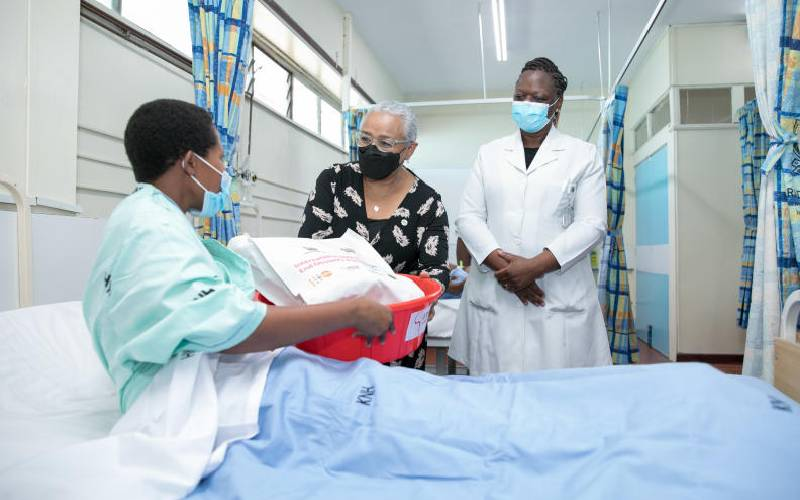

TEXA MEDICAL CLINIC
Home>>>
Services
Patient details
Out patient
In patient
About Us
OUR OUTSTANDING SERVICES
customer
satisfaction
is our
utmost
priority
General Services
Home-Based Care
Admissions(Inpatient)
Casualty-Accident and Emergency
Dermatology and Venereology
Pharmacy
Laboartory
Inpatient Services:
Our inpatient services comprise of:
Male: Medical and Surgical
Female: Medical, Surgical and Ob/Gyn
Children: Medical, Surgical and Pre-term
PAEDS (NBU, kangaroo mother care, medical
and surgical cases) admitting children below 12 years.
New Born Unit (NBU)
Please note that children under the age of 12
are not allowed in the wards
Male and Female surgical,
Male and Female medical
Gynae, maternity

Specialized Care
Cancer Care
Diabetes Care
Kidney/Renal Care
Orthopedic care
Opthamology(Eye Clinic)
Cardiac Centre/Cath Lab
Breast Clinic
Childrens Hospital